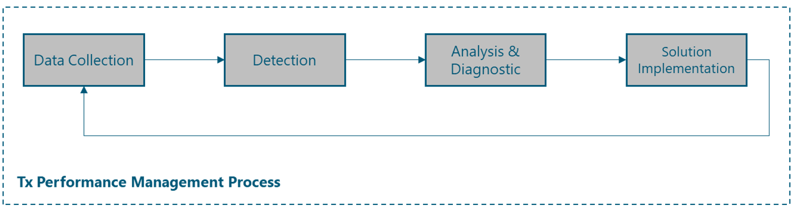
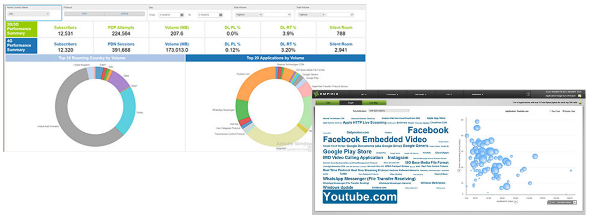
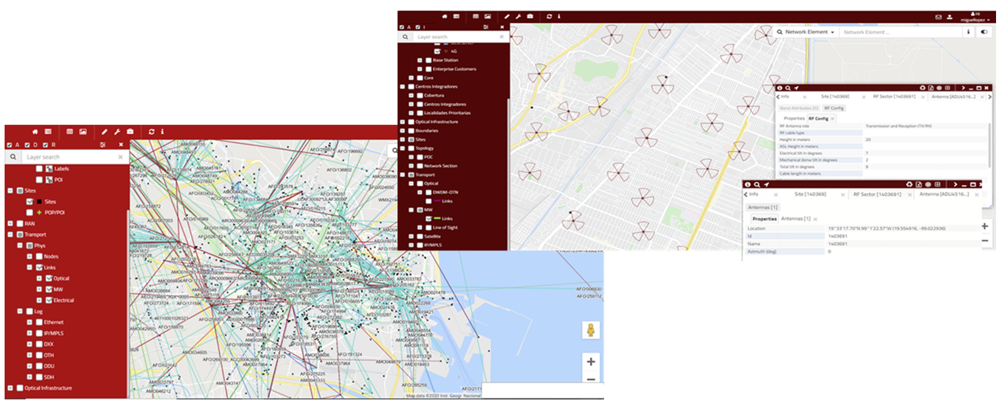

This section presents a generic yet customizable E2E process flow to perform the Tx performance mgmt in NaaS operator's network. An examination of each of the Tx performance mgmt process' steps are' provided to instruct NaaS operators on their implementation. Furthermore, this section describes the most relevant network areas that NaaS operators should consider as part of the Tx performance mgmt process.
This section chapter aims to provide NaaS operators with a description of the tasks included in the Tx performance mgmt process, which is represented in Figure 6.

Figure 6 — Tx Performance mgmt Process tasks
Data Collection
Tx performance data collection is the process of collecting performance-related mgmt data from network devices and storing them in a database or data file. The Tx performance mgmt team of the NaaS operator will be responsible for monitoring the network performance and the quality perceived by the customers. This will be achieved by monitoring and analyzing the Tx performance KPIs, allowing the detection of the network elements that negatively impact on the network performance and in the customer perception.
This process is an on-going activity composed of an 'offline' and an 'online' component. In the 'offline' monitoring, Tx engineers will usually review and troubleshoot the Tx KPIs from the previous day(s). These 'offline' activities will be complemented by an 'online' monitoring, where the NOC of the NaaS operator will continuously monitor the status of the nodes (i.e., absence of alarms affecting the provided service). The NOC monitoring should work on a 24x7 approach (please refer to Network Operation Center (NOC) Module for additional information on NOC activities).
Detection
Tx performance mgmt team will be responsible for detecting the network performance degradations that impact the quality of services perceived by the customers or the system performance. The activity will consist of searching for poor performing network elements revealed by the inspection of the different metrics available.
To implement the detection task, the NaaS operator will establish decision rules applied to the monitoring results for triggering any performance degradation affecting the quality. Degradations with respect to baseline performance will include among others: decrease in the availability, Increment in the network delay and packet loss.
When required, it will be necessary to activate and manage the needed operational and / or maintenance network processes to solve the fault or degradation (open tickets to NOC with specified format and diagnosis done, with and specified SLA to solve in case of service affecting incidents) (please refer to Network Operation Center (NOC) Module for additional information on NOC activities).
Analysis and Diagnostic
This activity includes the problem definition and the impact assessment (when / where / how much) as well as the root cause Identification and its nature (network congestion; network faults; capacity-related events; ')
The analysis and diagnosis of detected Tx performance issues will consider use of the different data sources, as described in section 3.
The following data inputs will be the main ones to be used to troubleshoot detected issues:
- Correlations of alarms: check the recent history of alarms of the degraded equipment to determine if the performance degradation could affect existing/past equipment alarms.
- To perform the diagnostic activities, the Tx performance team will use the physical inventory that provides information about network topology characteristics.
Solution Implementation
Definition of the solution plan and implementation mgmt by using the appropriate procedures available, depending on the nature of the action.
It's possible that the action plan needs to be executed by other teams using the inputs generated: maintenance issues, malfunctioning hardware / software to be fixed / replaced, recommendations to deploy additional capacity.
This section aims to examine the most relevant network areas that NaaS operators should consider as part of the Tx performance mgmt process, along with the most frequent events that impact the transport network performance and the typical measurement methods. Finally, standard methods are presented to be implemented in NaaS operator's transport network to mitigate performance issues.
4.2.1 Network Delay
Network delay is a performance characteristic that comprises the different aspects involved in the traffic path across the transport network (e.g., transmission delay, propagation delay, processing delay, queuing delay).
In the transport network, many factors directly affect the transport network delay characteristics. Some examples include the following:
- Network congestion
- Less than desirable route or lack of route to destination
- Network faults
The following subsections examine different characteristics of the network delay.
4.2.1.1 Round-trip time (RTT)
RTT is used to measure the expected time for network interaction between two hosts on a network. RTT is defined as the time it takes a packet to reach its destination and a response to return to the source.
RTT is an important metric to determine the health of the transport network, as an increment in its value can indicate network congestion or a network fault.
Table 4 displays typical target values for the RTT across the transport network segments.
|
|
Round-trip time Target Values
|
|
Last-mile
|
< 40 ms
|
|
Aggregation
|
< 10 ms
|
|
Satellite Link
|
< 750 ms
|
Table 4 — Typical target values for RTT in the transport network
Measurement Procedures
Typically, RTT is measured using active methods, which require the observations of test packets transmitted in both directions between two endpoints across a network.
One endpoint acts as the "source" host, which sends the first packet, and a "destination" host, which receives the first test packet and sends a test packet back to the source in reply. The round-trip delay is then calculated as the difference between the time at which the reply is received at the source and the time at which the original test packet was sent.
The Internet Engineering Task Force (IETF) has defined the two-way active measurement protocol (TWAMP) for RTT measurement. Modern transport equipment usually supports these types of measurements across multivendor equipment.
Alternatively, ICMP packets can be used to perform these measurements. These measurements can be performed using passive (e.g., by examining existing ICMP packets in the network) and active methods (e.g., configuring periodic packets generated by network equipment). This method's limitations are that the calculated measurements do not accurately reflect the network behavior for a specific traffic type. Therefore, it should only be used when TWAMP measurements are not feasible to implement.
Improvement Actions
The following actions can be implemented to reduce the RTT in the transport network:
- Link Capacity Planning: The RTT can be minimized by providing sufficient link capacity to keep queue occupation low.
- Routing Protocols Metric Adjustments: The routing protocols metrics can be adjusted to ensure that traffic follows the optimal path through the network.
4.2.1.2 Jitter (Delay variation)
Jitter is used to measure the variation in a sequence of RTT values over time and describes the disruption in the normal sequence of sending data packets. This is particularly relevant to traffic that requires relatively constant delay (e.g., voice over IP (VoIP) traffic).
Table 5 displays typical target values for the jitter across the transport network segments.
|
|
Jitter Target Values
|
|
Last-mile
|
< 10 ms
|
|
Aggregation
|
< 5 ms
|
|
Satellite Link
|
< 20 ms
|
Table 5 — Typical target values for jitter in the transport network
Measurement Procedures
Jitter is typically measured using active methods. Similarly to RTT, TWAMP can be used to measure jitter in the transport network by sending test packets and monitoring their experience in the network.
Improvement Actions
The following actions can be implemented to reduce the jitter in the transport network:
- Traffic prioritization: The jitter can be minimized by giving queue scheduler priority to traffic that is sensitive to variation, or by grooming or shaping such traffic.
4.2.2 Availability
The availability of the transport network refers to the proportion of time the network is in a functional condition, which is vital to maintain a good network performance. Furthermore, it represents the reliability of the individual components in a network.
Different events can diminish the total availability of the transport network elements, such as:
- Faulty hardware or components
- Fiber cuts
- Channel interference
Table 6 displays typical target values for the availability across the transport network segments.
|
|
Availability Target Values
|
|
Last-mile
|
> 99.9%
|
|
Aggregation
|
> 99.99%
|
|
Satellite Link
|
> 99.5%
|
Table 6 — Typical target values for availability in the transport network
Measurement Procedures
The availability measurements typically use a combination of active and passive methods based on the statistics collected from the managed devices. In this way, the total availability of a certain network topology can be estimated by measuring the individual components of it (i.e., link availability, device availability).
The methodology to calculate the theoretical availability of a transport network topology is provided in the Tx & IP Architecture Module.
Improvement Actions
The most common practice to increase the overall availability of the transport network is to implement redundancy methods. In this way, there is still a redundant element to handle the traffic in case of failure of a particular element. The following schemes can be implemented to improve the total availability of the transport network:
- Physical Redundancy: In this scheme, a redundant element is deployed in the network in a way that, in the event of a failure, the redundant element maintains the service. The main drawback of this scheme is that additional network elements must be deployed for each; this elevates the total CAPEX of the deployment.
- Logical Redundancy: Logical redundancy methods use configurations that enable traffic to be rerouted to redundant elements (e.g., link aggregation, router redundancy protocols). In this way, a certain element in the network acts as the backup for other elements, avoiding the deployment of additional elements.
4.2.3 Packet Loss
Packet loss denotes the expected probability that a transmitted packet will reach its destination, and is usually expressed as a percentage. It can be used to estimate the network's delivery reliability.
The most common causes of packet loss includes the following events:
- Network congestion that causes packet dropping in the network devices.
- Channel interference
Table 7 displays typical target values for the packet loss requirements across the transport network segments.
|
|
Packet loss Target Values
|
|
Last-mile
|
< 0.1%
|
|
Aggregation
|
< 0.1%
|
|
Satellite Link
|
< 0.5%
|
Table 7 — Typical target values for packet loss in the transport network
Measurement Procedures
Packet loss measurements always include the sending of test packets from a sender to a packet receiver in a predefined sending schedule and/or pattern; the receiver will then count these packets. It's highly recommended that test packets part of packet loss measurements are treated like the background traffic of interest.
TWAMP can be used to measure packet loss in the transport network by sending test packets and monitoring their experience in the network.
Alternatively, a passive method can be used. In this way, the packet loss is measured through the packet error/discarded counters in the network elements. This method's limitation is that the calculated measurements may not consider the packet loss in non-monitored elements (e.g., third-party network elements). Therefore, it should only be used when active methods are not feasible to implement.
Improvement Actions
The following actions can be implemented to improve the total availability of the transport network:
- Link Capacity Planning: The packet loss can be minimized by planning sufficient link capacity to avoid queue tail-drops.
- Protection Switching Methods: The implementation of protection switching methods decreases the traffic interruption in case of failures.
4.2.4 Resiliency
Transport networks, especially in rural environments, are prone to failures that can occur in their nodes or the links. In the event of a failure, it's essential that the network recovers as quickly as possible, which is known as network resiliency.
The continuity of the services in 4G networks is a critical requirement because the applications that are supported on these networks have increasingly strict limits in terms of recovery time in the event of a failure.
Table 8 displays the typical target recovery time for different services:
|
Service
|
Recovery Time Target Values
|
|
Web Browsing
|
< 1 s
|
|
Streaming
|
< 1 s
|
|
Voice
|
< 200 ms
|
Table 8 — Typical target values for Packet Loss in transport network
To avoid an impact on the service, it's necessary that the network completes the 'convergence' process in less time than the recovery time for each service in the event of a failure. Network convergence is defined as the process of synchronizing the forwarding and routing tables in the different network elements after a change in the topology.
It's highly recommended to include methods to ensure the fast convergence of the network; these methods are: fast convergence methods and protection switching methods. The following subsections examine the most common methods to be implemented in the transport network.
4.2.4.1 Fast Convergence Methods
Different fast convergence methods can be implemented in transport networks, allowing the network to stabilize and return to a fully operational state in less than 1 second. The most common fast convergence methods are described on the following page:
Bidirectional Forwarding Detection (BFD)
Bidirectional forwarding detection (BFD) is a fault detection protocol that provides a low-overhead, short-duration method to determine a communication failure between devices and notify upper-layer applications (also called clients). BFD is a detection protocol that can be enabled at the interface and routing protocol levels.
For instance, a network running the open shortest path first (OSPF) as a routing protocol, takes several tens of seconds to recover from a failure, using the default parameter settings. The main component of this delay is the time required to detect a failure using the timeout-based detection method. In contrast, BFD can be configured to detect link failures in up to 50 ms, which leads to a significant decrease in network recovery time.
It's recommended to enable BFD in interfaces and routing protocol levels only on the elements located in the aggregation segment.
BGP Fast Convergence (FC)
It's a set of features in border gateway protocol (BGP) such as multipath activation, prefix prioritization and event delay (dampening) to avoid recalculating routes in cases where IGP convergence is sufficient to keep the service and routes intact.
It's recommended to enable BGP Fast Convergence only in the routing equipment that supports BGP protocol located in the aggregation segment.
Graceful Restart
After a failure in a node with redundancy in control cards or after a reboot, it maintains the forwarding and routing tables, allowing the restoration of services more quickly without having to exchange link-state protocol data units (LSPs) or recalculate shortest-path-first (SPFs).
It's recommended to enable the graceful restart functionality only in the routing equipment that supports OSPF and BGP protocols to avoid the delay caused by the initialization process of these protocols after recovering from a failure where there were no changes in the topology.
4.2.4.2 Protection Switching Methods
Protection switching methods reestablish connectivity through precalculated redundant links or paths, and they can do this reset within a few milliseconds after detecting the failure. The most common available methods are illustrated on the following page:
Link Aggregation
Link aggregation supports combining multiple Ethernet links into a group, which is seen as a single link. The benefits are an increment in capacity as well as resiliency, as failure of a single link is tolerated. Furthermore, link aggregation also allows load sharing, which is otherwise not supported by Ethernet.
Link aggregation group (LAG) can be implemented in aggregation segments as a redundancy method to reach the target availability.
Router Redundancy Protocols
Router redundancy protocols (e.g., virtual router redundancy protocol (VRRP), hot standby router protocol (HSRP)) can be considered a form of L3 redundancy. The operational principle is to allow multiple routers to share a virtual IP and MAC address. There is one router elected as the master that assumes the role of forwarding the packets sent to the virtual IP address while the rest of the routers act as backup. In case the master fails, one of the backups becomes the master router.
Router redundancy protocols can be implemented in aggregation segments as a redundancy method to reach the target availability. The specific selection of the protocol varies according to the selected Tx equipment.
IP Fast Reroute
In these methods, there is at least one backup route that is installed in the forwarding tables; in such a way that when the failure is detected, the backup path is activated, allowing a service restoration in a few milliseconds after detection.
It's recommended to enable IP fast reroute functionality only on the elements located in the aggregation segment.
4.2.5 Quality of Service
The mgmt of the quality of service (QoS) is a crucial element in the Tx performance mgmt that indicates how to handle traffic within a network. The fundamental objective of managing the quality of service is to manage the dispute for network resources and maximize the experience of the end user of a session.
The concept of QoS used in transport networks is done through the use of differentiated services (DiffServ) classes. The main idea is to mark the priority traffic so that it isn't affected by possible congestion due to the fluctuation of link use level. The definition of these elements is examined broader in the Tx & IP Architecture Module.
To prevent network congestion, it's highly recommended to include methods to ensure the prioritization of certain traffic types in the network, these methods are known as congestion mgmt methods. The following subsections examine the most common methods to be implemented in the transport network.
4.2.5.1 Congestion Management Methods
Every time packets enter into devices faster than they can exit, there is a possibility of congestion. Network congestion may impact Tx performance KPIs and ultimately degrade the transport network services. To avoid and mitigate the occurrence of network congestion, different congestion mgmt methods can be implemented. Below the most common methods that can be implemented in the transport network.
Packet Scheduling Methods
Packet scheduling handles congestion mgmt within the transport network and must be implemented in any interface that can experience congestion. When congestion occurs, packets should be temporarily stored or queued in temporary storage for subsequent scheduling.
Commonly used queue types in the transport network are:
- Priority queuing (PQ): It serves packets in strict priority order.
- Weighted fair queuing (WFQ): It divides the interface bandwidth among the disparate flows according to their priority, ensuring a fair bandwidth distribution for all applications. This method provides better service for high-priority real-time streams, but lacks guaranteed bandwidth for any particular stream.
The typical configuration for the packet scheduling methods in the transport network is displayed in Table 9.
Packet Dropping Methods
Buffering memory is a limited resource on any interface. By queuing, buffers fill up and packets can be discarded. The most common discard methods to be implemented in transport networks are:
- Tail Drop: In this method, packets are discarded as they arrive. This method does not differentiate among different traffic types.
- Weighted random early detection (WRED): This method aims to maintain the queue length at a level between the minimum and maximum thresholds and to implement different drop policies for different classes of traffic. WRED can selectively drop lower priority traffic when the interface becomes congested, and it can provide differentiated performance characteristics for different classes of service.
The typical configuration for the packet dropping methods in the transport network is displayed in Table 9.
|
Traffic type
|
Assign Queue
|
Packet drop method
|
|
Voice Traffic
|
Priority queuing' (PQ)
|
Tail drop
|
|
Signaling Traffic
|
WFQ
|
WRED
|
|
High-priority Data Traffic
|
WFQ
|
WRED
|
|
Low-priority Data Traffic
|
Default Queue
|
WRED
|
Table 9 — Typical QoS methods in the transport network
This section examines the most common commercial tools that are specialized in the performance analysis of transport network data from specific data sources. More tools on each category can be found in the Tx performance mgmt tool list.
4.3.1 Network Performance Monitoring System
A network performance monitoring system monitors the network for performance and performs additional activities such as network traffic bottlenecks identification. More details regarding the selection of these tools can be found in the Network Monitoring Architecture Module.
Tool: Atrinet NetACE
Link: https://www.atrinet.com/netace/#
NetACE is a vendor-agnostic solution that allows unified monitoring and control over a multivendor network in a global multi-site topology. A high-level overview of the entire network allows NetACE to define alternative routes in case of fault, to quickly and without errors rollout a new service across the network, and to immediately replace settings for a faulty component.
Main features include:
- Inventory capabilities enriched with an automated system that discovers all network elements and the topology that connects them.
- Once the system topology is discovered, the system allows the operation or upper layer mgmt systems to monitor and control any element in the system regardless of equipment vendor.
- The communication uses standard mgmt protocols adapted to the protocol that the specific equipment supports.
4.3.2 Interfaces Probes Data Analysis
These tools implement and manage a set of probes along the network to monitor the performance. More details regarding the selection of these tools can be found in the Network Monitoring Architecture Module.
Tool: Empirix Diagnostix and Holistix Applications
Link: https://www.empirix.com/products/diagnostix/
Diagnostix is a set of applications that help operations teams quickly identify service-impacting issues and their true root cause across networks, services, devices, and applications. It provides granular insight into call and data sessions to provide an accurate view of network performance and customer experience.
Main features include:
- Perform E2E subscriber, protocol, network, and call search
- Get near real-time insights into the most critical network and infrastructure failures
- Fully navigate network and infrastructure traffic data from various perspectives with preconfigured analytics packages
- Fully navigate network and infrastructure traffic data from various perspectives with preconfigured analytics packages
- Investigate issues up to the single data record (xDR), including protocol analysis
- Diagnose issues for a single subscriber or a group of subscribers and score the services they receive with KPIs/ KQIs

Figure 7 — Empirix Probes Data analysis
4.3.3 Network Inventory Management
Network Inventory tools maintain a record of information regarding all elements in the network. More details regarding the selection of these tools can be found in the Network Operation Center (NOC) Module.
Tool: TeleworX mapvista
Link: https://www.teleworx.com/products.html#features11-24
MapVista integrates a versatile network model inventory with the power of geographic analysis to provide a truly integrated E2E network planning capability. It integrates workflow and document mgmt modules to facilitate integration with existing corporate systems.
MapVista main functionalities include:
- Physical Inventory from multivendor network elements across all network sections. Physical entities are modeled down to the port level, including BOM (Bill of Materials) information.
- Provides E2E logical relations to enable network topology tracking. Logical inventory includes E2E connectivity routes for mobile and fixed networks.
- mapVista establishes network dependencies to facilitate network troubleshooting and detect design issues. Mapping dependencies permits identifying SRLG (Shared Risk Link Groups) connections, potential bottlenecks and allows proper dimensioning of concentration points, hotels, and hubs.
- mapVista includes functions to check and reconcile entities between OSS and Inventory.
- Geographically coded or scale free diagrams are at reach to facilitate understanding of the network topologies.

Figure 8 — TeleworX mapVista NW Inventory